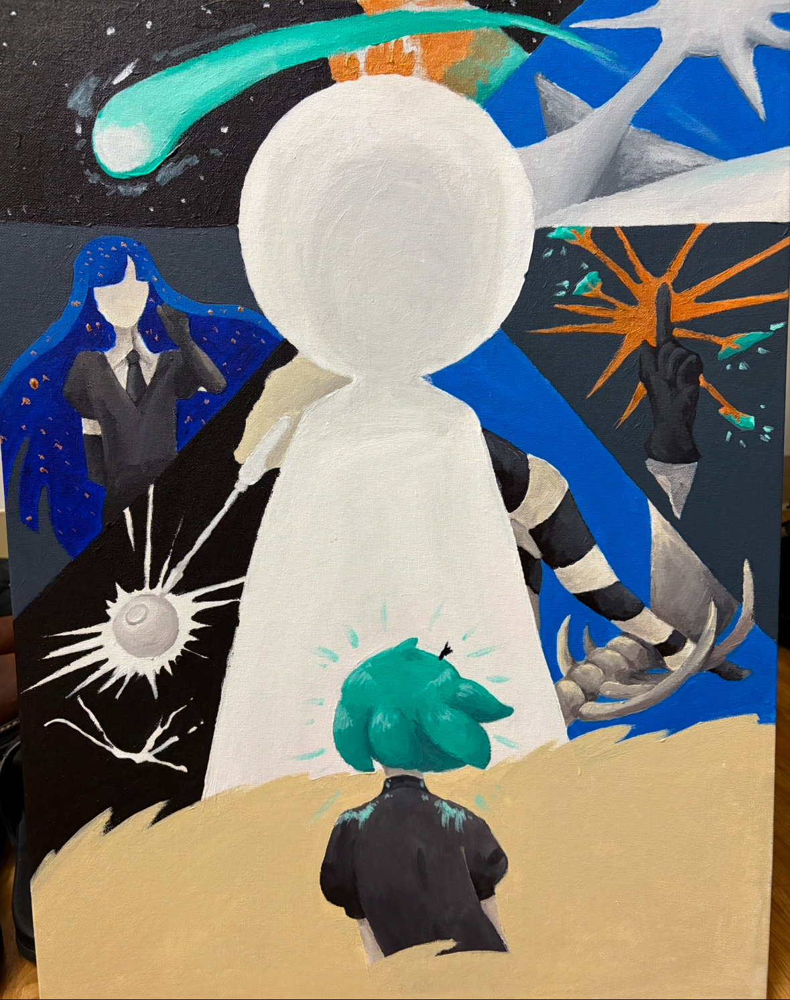
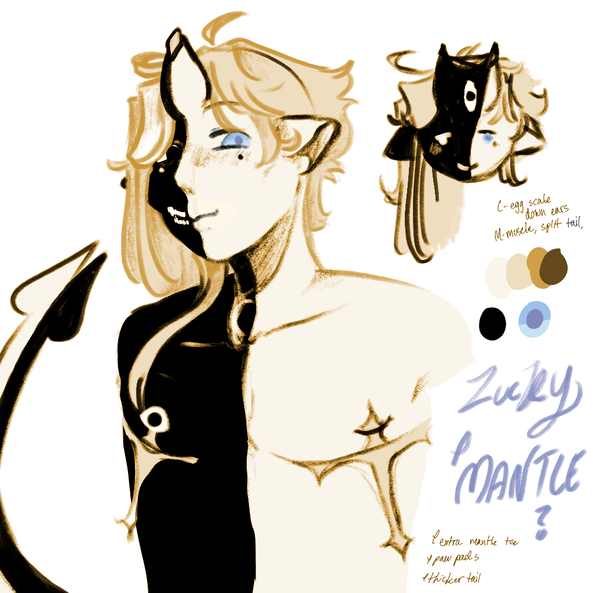
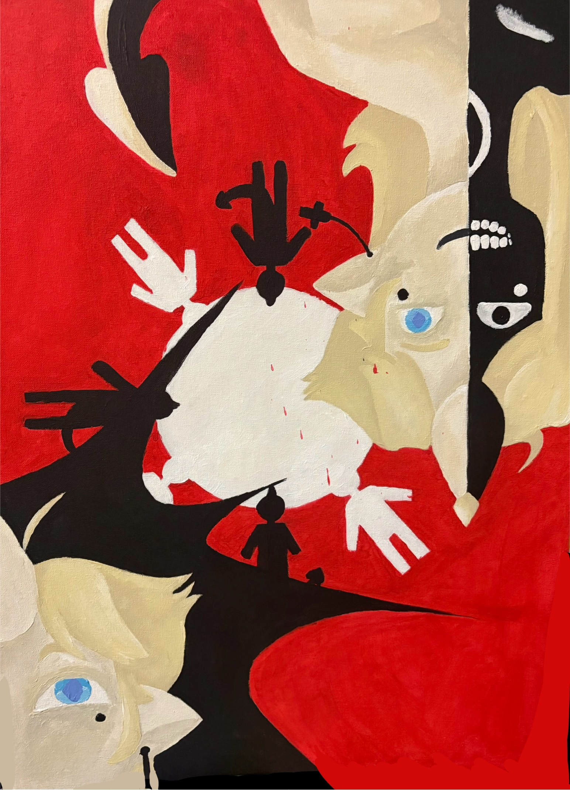

A piece I made a manga. that I really like called Land of the Lustrous or its Japanese name, Houseki no Kuni by author Haruko Ichikawa

Wisteria's reference art (also made by me, drawn on my iPad using an Apple Pencil).

A piece I made of my character Wisteria with a movie poster-esque feel.